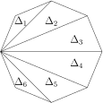
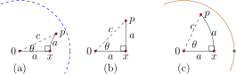
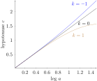

A strong connection exists between the family \((\mathbb{P}^2_k,{\cal S}_k)\) of elliptic geometries with curvature \(k\gt 0\) and the family \((\mathbb{D}_k,{\cal H}_k)\) of hyperbolic geometries with curvature \(k\lt 0\text{.}\) The two families sport identical descriptions of the transformation group, identical descriptions of straight lines, identical arc-length and area formulas, as well as identical formulas for the area of a triangle.
We may symbolize this connection with the following description of an infinite family of geometries, one for each real number \(k\text{.}\) This general description will allow us to elegantly express some important features common to hyperbolic, Euclidean, and elliptic geometry.
Definition7.4.1
For each real number \(k\) the geometry \(\boldsymbol{(X_k,G_k)}\) has space
where \(\theta \in \mathbb{R}\) and \(z_0\) is a point in \(X_k\text{.}\) Moreover, the unique line through two points \(p\) and \(q\) in \((X_k,G_k)\) is the unique cline through the points \(p, q\text{,}\) and \(-1/(k\overline{p})\text{.}\) A smooth curve \(\boldsymbol{r}:[a,b]\to X_k\) has arc-length given by
As we have seen, these geometries manifest themselves in strikingly different ways. If \(k
\gt 0\text{,}\) the sum of the angles of a triangle must be greater than \(\pi\text{;}\) and if \(k \lt 0\) the sum of the angles of a triangle must be less than \(\pi\text{.}\) If \(k \gt 0\) the space \(X_k = \mathbb{P}^2_k\) has finite area; if \(k \lt 0\text{,}\) \(X_k = \mathbb{D}_k\) has infinite area. If \(k \gt 0\) the circumference of a circle with radius \(r\) is less than \(2\pi r\text{;}\) if \(k \lt 0\) the circumference is greater than \(2\pi r\text{.}\)
What about when \(k = 0\text{?}\) We may check that \((X_0,G_0)\) corresponds to Euclidean geometry, though with a scaled metric. In particular, lines in \((X_0,G_0)\) correspond to Euclidean lines (since \(k = 0\text{,}\) \(-1/(k\overline{p}) = \infty\text{,}\) so the unique line through \(p\) and \(q\) is the Euclidean line), and when \(k = 0\) the arc-length is simply twice the usual Euclidean arc-length. So while we are scaling distances in \((X_0,G_0)\text{,}\) Euclidean geometry applies: triangles are Euclidean triangles and have angle sum equal to 180\(^\circ\text{.}\) Triangles with a right angle are Euclidean right triangles and satisfy the Pythagorean theorem.
Thus, we treat \((X_k,G_k)\) as one big family of geometries. The sign of \(k\) dictates the type of geometry we have, and the magnitude of \(k\) dictates the radius of the disk in which we model the geometry (unless \(k = 0\) in which case the space is \(\mathbb{C}\)). Morevoer, Euclidean geometry \((X_0,G_0)\) marks the edge of the knife from wihch we move into a hyperbolic world is \(k\) drops below 0, and into an elliptic world if \(k\) rises above 0.
We now summarize some results established in the previous sections and emphasize key features common to all \((X_k,G_k)\text{.}\)
First and foremost, we note that arc-length is an invariant function of \((X_k,G_k)\) and that the arc-length ensures that the shortest path from \(p\) to \(q\) in \((X_k,G_k)\) is along the line between them. We have discussed these facts in the cases \(k = -1,0,1\text{,}\) and the result holds for arbitrary \(k\text{.}\) So, the arc-length formula provides a metric on \((X_k,G_k)\text{:}\) Given \(p,q \in X_k\text{,}\) we define \(d_k(p,q)\) to be the length of the shortest path from \(p\) to \(q\text{.}\) The circle in \((X_k,G_k)\) centered at \(p\) through \(q\) consists of all points in \(X_k\) whose distance from \(p\) equals \(d_k(p,q)\text{.}\)
Theorem7.4.2
For all real numbers \(k\text{,}\) \((X_k,G_k)\) is homogeneous and isotropic.
Given any point \(p\) in \(X_k\text{,}\) the transformation \(T(z) = \frac{z-p}{1+k\overline{p}z}\) in \(G_k\) maps \(p\) to the origin. So all points in \(X_k\) are congruent to \(0\text{.}\) By the group structure of \(G_k\) it follows that any two points in \(X_k\) are congruent, so the geometry is homogeneous.
To show \((X_k,G_k)\) is isotropic we consider three cases.
If \(k \lt 0\) then \((X_k,G_k)\) models hyperbolic geometry on the open disk with radius \(s = 1/\sqrt{|k|}\text{.}\) As such, \(G_k\) contains the sorts of Möbius transformations discussed in Chapter 5 and pictured in Figure 5.1.6. In particular, for any point \(p \in \mathbb{D}_k\text{,}\) \(G_k\) contains all elliptic Möbius transformations that swirl points around type II clines of \(p\) and \(-1/(k\overline{p})\text{,}\) the point symmetric to \(p\) with respect to the circle at infinity. These maps are preciley the rotations about the point \(p\) in this geometry: they rotate points in \(X_k\) around cicles centered at \(p\text{.}\)
If \(k = 0\text{,}\) then transformations in \(G_0\) have the form \(T(z)=e^{i\theta}(z-z_0)\text{.}\) Now, rotation by angle \(\theta\) about the point \(p\) in the Euclidean plane is given by \(T(z)=e^{i\theta}(z-p)+p\text{.}\) Setting \(z_0 = p-pe^{-i\theta}\) we see that this rotation indeed lives in \(G_0\text{.}\)
If \(k \gt 0\) then \((X_k,G_k)\) models elliptic geometry on the projective plane with radius \(s = 1/\sqrt{k}\text{.}\) As such, for each \(p \in X_k\text{,}\) \(G_k\) contains all elliptic Möbius transformations that fix \(p\) and \(p_a\text{,}\) the point antipodal to \(p\) with respect to the circle with radius \(s\text{.}\) Such a map rotates points around type II clines with respect to \(p\) and \(p_a\text{.}\) Since these type II clines correspond to circles in \(X_k\) centered at the fixed point, it follows that \(G_k\) contains all rotations.
Thus, for all \(k \in \mathbb{R}\text{,}\) \((X_k,G_k)\) is isotropic.
Theorem7.4.3
Suppose \(k\) is any real number, and we have a triangle in \((X_k,G_k)\) whose angles are \(\alpha, \beta,\) and \(\gamma\) and whose area is \(A\text{.}\) Then
Proof of this tidy result has already appeared in pieces (see Exercise 1.2.2, Lemma 7.2.2, and Lemma 7.3.1); we emphasize that this triangle area formula reveals the locally Euclidean nature of all the geometries \((X_k, G_k)\text{:}\) a small triangle (one with area close to 0) will have an angle sum close to 180\(^\circ\text{.}\) Observe also that the closer \(|k|\) is to 0, the larger a triangle needs to be in order to detect an angle sum different from \(180^\circ\text{.}\) Of course, if \(k = 0\) the theorem tells us that the angles of a Euclidean triangle sum to \(\pi\) radians.
Theorem7.4.4
Suppose a convex \(n\)-sided polygon \((n \geq 3)\) in \((X_k,G_k)\) has interior angles \(\alpha_i\) for \(i = 1, 2, \ldots, n\text{.}\) The area \(A\) of the \(n\)-gon is related to its interior angles by
\begin{equation*}
kA = \bigg(\sum_{i=1}^n\alpha_i\bigg) - (n-2)\pi.
\end{equation*}
A convex \(n\)-gon can be divided into \(n-2\) triangles as in Figure 7.4.5. Observe that the area of the \(n\)-gon equals the sum of the areas of these triangles.
Figure7.4.5 Splitting an \(n\)-gon into \(n-2\) triangles in the case \(n
= 8\text{.}\)
By Theorem 7.4.3, the area \(A_i\) of the \(i\)th triangle \(\Delta_i\) is related to its angle sum by
Now, the total angle sum of the \(n-2\) triangles equals the interior angle sum of the \(n\)-gon, so it follows that
\begin{equation*}
kA = \bigg(\sum_{i=1}^n \alpha_i \bigg) - (n-2)\pi.
\end{equation*}
This completes the proof.
Lemma7.4.6
Suppose \(k \in \mathbb{R}\text{,}\) \(s = \frac{1}{\sqrt{|k|}}\) and \(0 \lt x \lt s\) is a real number (if \(k = 0\text{,}\) we just assume \(0 \lt x\)). In \((X_k,G_k)\text{,}\) the circle centered at 0 through \(x\) has area
Consider the circle centered at the origin that goes through the point \(x\) on the positive real axis, where \(0 \lt x \lt s\text{.}\) The circular region matches the polar rectangle \(0 \lt \theta \lt 2\pi\) and \(0 \lt r \lt x\text{,}\) so the area is given by
Evaluating this integral gives the result, and the details are left as an exercise.
Theorem7.4.7Unified Pythagorean Theorem
Suppose \(k \in \mathbb{R}\text{,}\) and we have a geodesic right triangle in \((X_k,G_k)\) whose legs have length \(a\) and \(b\) and whose hypotenuse has length \(c\text{.}\) Then
Suppose \(k \in \mathbb{R}\text{.}\) If \(k = 0\) the equation reduces to \(c^2 = a^2 + b^2\text{,}\) which is true by the Pythagorean Theorem 1.2.1! Otherwise, assume \(k \neq 0\) and let \(s = \frac{1}{\sqrt{|k|}}\text{,}\) as usual. Without loss of generality we may assume our right triangle is defined by the points \(z = 0\text{,}\) \(p = x\text{,}\) and \(q = yi\text{,}\) where \(0 \lt x,y \lt s\text{.}\) By construction, the legs \(zp\) and \(zq\) are Euclidean segments, and \(\angle pzq\) is right.
Let \(a = d_k(z,p), b = d_k(z,q),\) and \(c = d_k(p,q)\text{.}\) By Lemma 7.4.6,
While we have proved the theorem, it feels a bit like we have missed the best part - discovery of the relationship. For more on this, we encourage the reader to consult [20].
Example7.4.8Detecting curvature with triangles
Suppose a two-dimensional bug in \((X_k,G_k)\) walks along a line for \(a \gt 0\) units, turns left 90\(^\circ\text{,}\) and walks on a line for another \(a\) units, thus creating a right triangle with legs of equal length. Let \(c\) denote the hypotenuse of this triangle. The diagram below depicts such a route, in each of the three geometry types. For convenience, we assume the journey begins at the origin and proceeds first along the positive real axis.

It turns out the value of \(c\) as a function of \(a\) can reveal the curvature \(k\) of the geometry. If \(k = 0\) the Pythagorean theorem tells us that \(c^2 = 2a^2\text{.}\) For \(k \lt 0\text{,}\) the hyperbolic law of cosines (Exercise 7.3.4) tells us that \(\cosh(\sqrt{|k|} c) = \cosh^2(\sqrt{|k|}a)\text{.}\) For \(k \gt 0\text{,}\) the elliptic law of cosines (Exercise 7.2.5) tells us that \(\cos(\sqrt{k} c) = \cos^2(\sqrt{k}a)\text{.}\) We may solve each of these equations for \(c\text{,}\) using the fact that \(a\) and \(c\) are positive, to give us \(c\) as a function of \(a\) and the curvature \(k\text{.}\) We have plotted these functions for \(k = -1,0,1\) below. When \(k \lt 0\) the length of the hypotenuse of such a triangle is slightly longer than that predicted by the Euclidean formula (the Pythagorean theorem); when \(k \gt 0\) the length is smaller than the length predicted by the Euclidean formula.

We close by summarizing measurement formulas for these geometries. Except for the case \(k=0\) these formulas were proved in the exercises of the previoius two sections. The case \(k=0\) is tackled in Exercise 7.4.1.
Measurement Formulas in \((X_k,G_k)\)
Suppose \(k \in \mathbb{R}\text{,}\) \(s = \frac{1}{\sqrt{|k|}}\) and \(0 \lt x \lt s\) is a real number (with the convention that if \(k = 0\) we simply require \(0 \lt x\)).
In \((X_k,G_k)\text{,}\) the distance from 0 to \(x\) is given by
Check that the measurement formulas in \((X_k,G_k)\) are correct when \(k = 0\text{.}\) In particular, show that \(d_0(0,x)=2x\) for any \(x \gt 0\) on the real axis, and that a circle with radius \(r\) as measured in \((X_0,G_0)\) has area \(A(r) = \pi r^2\) and circumference \(C(r)=2\pi r\text{.}\)
Use Definition 7.1.4 to prove that for all real numbers \(k\text{,}\) the curvature of \((X_k, G_k)\) is indeed equal to \(k\text{.}\) Hint: Tackle three cases: \(k \lt 0, k = 0\text{,}\) and \(k \gt 0\text{.}\)
4
Suppose an intrepid team of two-dimensional explorers sets out to determine which 2-dimensional geometry is theirs. Their cosmologists have told them there world is homogeneous, isotropic, and metric, so they believe that the geometry of their universe is modeled by \((X_k,G_k)\) for some real number \(k\text{.}\) They carefully measure the angles and area of a triangle. They find the angles to be 29.2438\(^\circ\text{,}\) 73.4526\(^\circ\text{,}\) and 77.2886\(^\circ\text{,}\) and the area is 8.81 km\(^2\text{.}\) Which geometry is theirs? What is the curvature of their universe?
5
Prove that in \((X_k,G_k)\) the derivative of area with respect to \(r\) is circumference: \(\frac{d}{dr}[A(r)]=C(r).\)
6
Suppose a two-dimensional bug in \((X_k,G_k)\) traces the right triangle route from 0 to \(p\) as depicted in Example 7.4.8. Argue that for a given value of \(a\text{,}\) the hyperbolic hypotenuse length exceeds the Euclidean hypotenuse length, which exceeds the elliptic hypotenuse length. Hint: One might prove that for all \(k\text{,}\) when \(a = 0\text{,}\) \(c = 0\) and \(\frac{dc}{da}\vert_{a=0}=\sqrt{2}\text{;}\) and then show that for \(a \gt 0\text{,}\) \(\frac{d^2 c}{da^2}\) is positive for negative values of \(k\text{,}\) and it is negative for positive values of \(k\text{.}\)
7
Suppose a team of two-dimensional explorers living in \((X_k,G_k)\) travels 8 units along a line. Then they turn right (90\(^\circ\)) and travel 8 units along a line. At this point they find they are 12 units from their starting point. Which type of geometry applies to their universe? Can they determine the value of \(k\) from this measurement? If so, what is it?
8
Repeat the previous exercise using the measurements \(a = 8\) units and \(c = 11.2\) units.
9
Suppose a team of two-dimensional explorers living in \((X_k,G_k)\) finds themselves at point \(p\text{.}\) They travel 8 units along a line to a point \(z\text{,}\) turn right (90\(^\circ\)) and travel another 8 units along a line to the point \(q\text{.}\) At this point they measure \(\angle pqz=.789\) radians. Which type of geometry applies to their universe? Can they determine the value of \(k\) from this measurement? If so, what is it?
10
Suppose a team of two-dimensional explorers living in \((X_k,G_k)\) tethers one of their team to a line 18 scrambles long (a scramble is the standard unit for measuring length in this world - and 24 scrambles equals one tubablast). They swing the volunteer around in a circle, and though he laughs maniacally, he is able to record with confidence that he traveled 113.4 scrambles. Assuming these measurements are correct, which type of geometry applies to their universe? Can they determine the value of \(k\) from these measurements? If so, what is it?